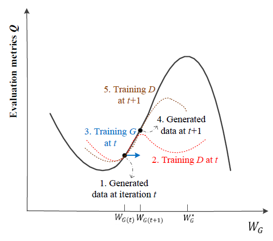
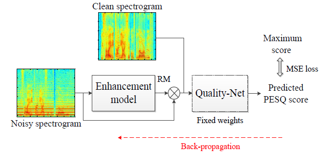
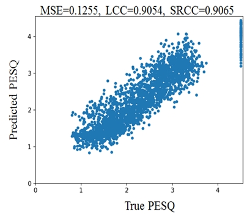
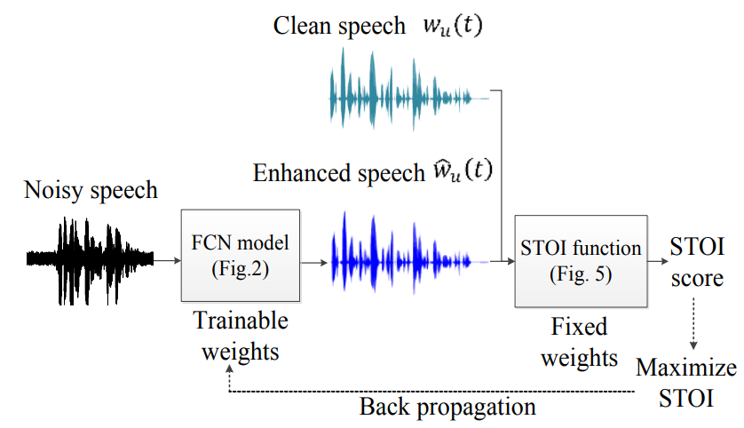
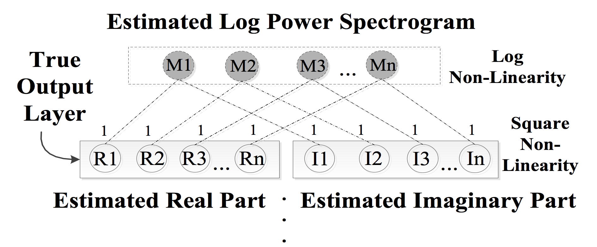
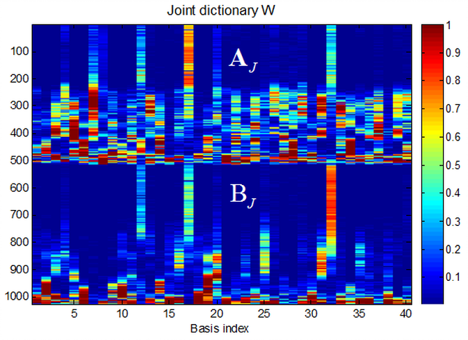

About Me
I am a Ph.D. candidate in Department of Computer Science and Information Engineering, National Taiwan University under the advisement of Prof. Shou-De Lin.
I am also a research assistant in Research Center for Information Technology Innovation, Academia Sinica under the co-advisement of Dr. Yu Tsao.
My research interests include: Machine Learning, Deep learning, and Speech processing.
I am also a research assistant in Research Center for Information Technology Innovation, Academia Sinica under the co-advisement of Dr. Yu Tsao.
My research interests include: Machine Learning, Deep learning, and Speech processing.


Recent Publications
For a complete publication list, please see my CV
MetricGAN: Generative Adversarial Networks based Black-box Metric Scores Optimization for Speech Enhancement
Learning with Learned Loss Function: Speech Enhancement with Quality-Net to Improve Perceptual Evaluation of Speech Quality
paper
Quality-Net: An End-to-End Non-intrusive Speech Quality Assessment Model based on BLSTM
End-to-End Waveform Utterance Enhancement for Direct Evaluation Metrics Optimization by Fully Convolutional Neural Networks
Complex Spectrogram Enhancement by Convolutional Neural Network with Multi-Metrics Learning
paper
Joint Dictionary Learning-based Non-Negative Matrix Factorization for Voice Conversion to Improve Speech Intelligibility After Oral Surgery